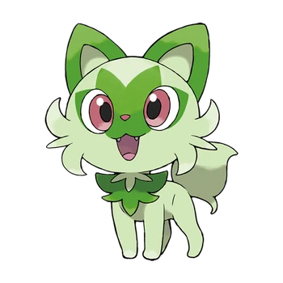
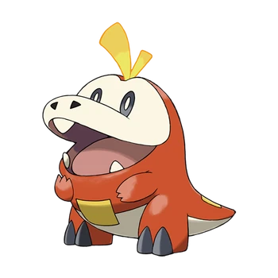
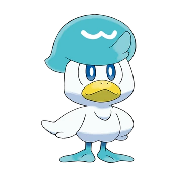

Novena generación
- Sprigatito

- Sprigatito está basado en un gato doméstico de pelaje largo. Tiene un pelaje sedoso, de tonos verdes,
el cual tiene una composición similar a una planta y por este motivo, puede obtener energía haciendo
la fotosíntesis. Presenta detalles similares a hojas de árbol en la mancha que tiene entre su nariz
y ojos rojizos, o en la forma del pelaje de los mofletes y el pecho. Su cola es esponjosa y sus patas
bastante pequeñas, debajo de estas, tiene unas almohadillas de color rosado, pero no se pueden
apreciar sus dedos. En su mandíbula superior, se pueden evidenciar un par de afilados y pequeños
colmillos, cuando abre su boca.
Es un Pokémon caprichoso que adora ser el centro de atención, y se enfadará si su entrenador le presta
más atención a otro Pokémon. Sus patas delanteras producen un aroma dulce y embriagador, que hace que
sus oponentes pierdan las ganas de combatir. Dicho aroma es mucho más potente, cuando se está en presencia
de la luz solar. Al recibir caricias, puede absorber la humedad de su pelaje y de esta forma, efectuar
la fotosíntesis con mayor celeridad. Suele lavar su rostro con el propósito de que no se le seque.
- Fuecoco

- Fuecoco está basado en una cría de cocodrilo o caimán y en un pimiento del piquillo relleno. Su cuerpo
es de color rojo, su cara y la parte inferior de su cuerpo son beige y sus ojos son negros. En su barriga
y en su cola tiene unas placas cuadradas de color amarillo y su cabeza posee una especie de mechón de
color amarillo. Sus patas delanteras son pequeñas en comparación a las traseras, en estas últimas posee
pezuñas sobre las que anda, siendo un Pokémon bípedo.
Fuecoco absorbe calor del ambiente mediante las escamas rectangulares de su tripa y espalda y lo transforma
en energía ígnea. Estas escamas siempre están templadas y, a veces, pueden llegar a calentarse mucho.
En su cabeza tiene una muesca de la que salen dos pequeñas llamas planas, por donde libera la energía
ígnea que genera en el interior de su cuerpo. Si se emociona le salen más llamas de su cabeza. Tiene un
carácter apacible y hace las cosas a su ritmo. Adora comer y se lanza a devorar cualquier alimento que se
encuentre.
- Quaxly

- Quaxly está basado en un pato doméstico y en un pato con cresta. Posee un gran plumaje azul sobre su
cabeza a modo de tupé, el cual podría basarse en las crestas de ciertas especies de patos, como el pato
crestado balinés. El resto de su plumaje es blanco, su pico amarillo, y tanto sus grandes ojos como
sus patas son azules.
Adora la pulcritud, segrega un gel por sus plumas que las mantiene limpias, y también repele el agua y
la suciedad. Este lo usa para mantener apelmazadas las plumas del mechón de su cabeza, ya que cuando
este se seca, se despeina. Posee una gran fuerza en sus patas, con las que puede nadar por fuertes
corrientes, así como asestar con ellas patadas muy rápidas a sus oponentes.